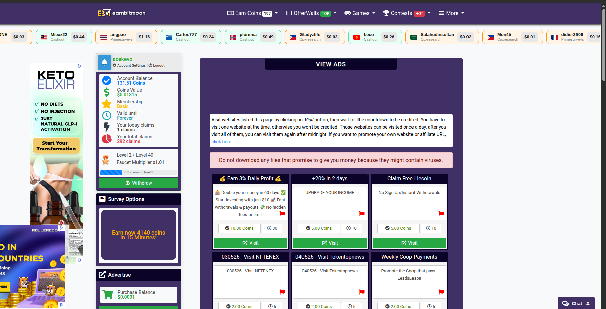

Disclosure
This article contains referral links. If you sign up through our links, we may earn a small commission at no extra cost to you. This supports the site. See our full disclaimer.
EarnBitMoon is a legitimate crypto faucet and GPT platform with over 2 million monthly visitors. Its 5-minute faucet, PTC ads, shortlinks, and high-paying offerwalls make it one of the more complete free-crypto ecosystems around. It won't replace income, but with the right strategy — especially hitting offerwalls daily — reaching $1 a day is achievable. Payments via FaucetPay are fast and verifiable.
The GPT and crypto faucet space is crowded with platforms promising the moon — sometimes literally. EarnBitMoon (earnbitmoon.club) is one that's been around long enough, and grown large enough, to deserve serious scrutiny. With over 2 million monthly visitors according to recent web traffic analytics, it isn't just another fly-by-night faucet running out of a shared hosting plan.
The question we care about here is not whether it's popular — it's whether it's worth your time. Specifically: can it help you hit that $1-a-day target that this site is built around?
Below is a full breakdown of every earning mechanism, the withdrawal options, the leveling system, what to avoid, and a concrete daily strategy. No hype. Just what it actually does and what it pays.
Quick Facts: EarnBitMoon
What Is EarnBitMoon?
EarnBitMoon is a cryptocurrency reward platform — a faucet and GPT (Get-Paid-To) site in one. The premise is simple: complete small tasks on the site, accumulate internal "Coins" with a fixed USD value, and convert them to cryptocurrency when you withdraw.
Unlike the primitive faucets of the early 2010s where clicking once an hour netted you a fraction of a cent in Bitcoin, EarnBitMoon has evolved into a multi-layered ecosystem. Yes, it has a traditional faucet — but it also integrates offerwalls, PTC (Paid-To-Click) ads, shortlinks, daily bonuses, achievement challenges, and a leveling system that increases your payout rates over time.
The appeal is total accessibility. Zero upfront investment. No skills required. Whether you're stacking your first fractions of Litecoin or just want passive crypto dripping into a wallet while you browse, EarnBitMoon is a functional entry point into free digital assets.
Getting Started: The Sign-Up Process
Registration is free and takes under two minutes. Head to earnbitmoon.club, click Register, provide an email address, username, and password, then solve a quick captcha.
One step that catches people out: email verification. You must click the link in the confirmation email before withdrawals are enabled. Don't skip it. If the email doesn't arrive in a few minutes, check your spam folder.
Pro tip for faucet users
Set up a dedicated email address for GPT sites and faucets. It keeps your inbox clean, centralizes all withdrawal receipts, and makes it easier to track which platforms are actually paying. Most free email providers let you create multiple accounts.

Ways to Earn on EarnBitMoon
The site's staying power comes from having multiple earning layers. If one gets boring or runs dry, there's always something else to switch to. Here's what each method delivers in practice.
1. The 5-Minute Faucet
The core mechanic. Every five minutes, you solve a captcha, hit Roll, and receive Coins based on a random number. Most claims land at the lowest payout tier. Jackpot numbers exist but are statistically rare — treat them as a lottery, not a strategy.
The faucet alone will not get you to $1 a day. What it does is keep your activity level high and feed the leveling system. Keep a pinned tab open and click it whenever you're idle — browsing, waiting for a page to load, watching something. Over a 4-hour session that's up to 48 extra claims for zero marginal effort.
2. Paid-To-Click (PTC) Ads
Advertisers pay EarnBitMoon for exposure. You get a cut for viewing their sites. Click an ad, wait for a timer (5–40 seconds depending on the ad), solve an image captcha, and Coins credit instantly. Longer timer = higher payout.
This is the most reliable earning method on the site — guaranteed payout every time, no disqualifications. Clear the PTC section once daily. It takes five minutes and provides a consistent baseline.
3. Shortlinks
Click a link, navigate through a series of intermediary pages full of ads, find the Continue buttons, solve captchas, reach the destination. Higher payout than PTC, significantly more annoying.
The frustration comes from pop-ups and deceptive "Download" buttons on the intermediary pages. If you have a high tolerance for that, shortlinks are lucrative. If not, skip them and focus on offerwalls instead. Never click any download prompts — those are advertiser tricks, not part of the shortlink process.
4. Offerwalls — Where the Real Money Is
If you have one goal on EarnBitMoon, it's this: use the offerwalls. EarnBitMoon partners with third-party research and advertising networks including CPX Research, TimeWall, BitLabs, and CPALead. These are where daily earnings can actually move.
- Surveys (CPX Research, BitLabs): A single 15-minute market research survey can pay $0.50–$1.50 in Coins. Two completed surveys a day and you've hit your $1 target before touching anything else.
- App installs and game milestones: Download a mobile game, reach a specific level within a timeframe, earn large Coin payouts. These are high-value but time-bounded.
- Micro-tasks (TimeWall): Smaller, faster tasks. Lower payout per task but no disqualification risk.
Offerwall surveys have disqualification risk — this is universal across the industry, not an EarnBitMoon problem. Plan for a 40–60% disqualification rate and don't spend more than 10–15 minutes on any survey that hasn't clearly paid out. Keep your demographic profile consistent to improve qualification rates over time.
5. Daily Bonuses and Challenges
EarnBitMoon rewards consistency with two systems. First, a daily login bonus that increases with each consecutive day you claim — miss a day and the streak resets to zero. Second, an achievement challenge system: complete 20 faucet claims, view 10 PTC ads, and similar targets to unlock bonus Coin payouts. These are worth doing because you're completing the underlying tasks anyway.
6. The Multiplier Game — Skip It
EarnBitMoon includes a provably fair coin flip and multiplier betting system. The advice here is simple: avoid it entirely. The house edge means you will lose your Coins over time. Treat every Coin as real money — because at withdrawal, it is. Protect your earnings.
The Leveling System and Memberships
EarnBitMoon uses a leveling system tied to experience points (EXP) earned from faucet claims, shortlinks, and offerwall completions. Each level increases your base faucet payout by a small percentage. Over months of consistent use, high-level users earn meaningfully more per click than new accounts.
Premium memberships (Basic, Silver, Gold) are also available, purchasable with earned Coins or by depositing funds. They boost faucet rewards, lower withdrawal minimums, and increase referral commission rates.
Should you upgrade?
Generally no — unless you have a large active referral network. The free leveling system provides compounding benefits over time without spending your earnings. Withdraw your Coins rather than reinvesting them in a membership unless the referral math clearly works in your favor.
Referral Program: Passive Earning at Scale
EarnBitMoon's referral system is one of the more generous in the faucet space. When you refer someone using your unique affiliate link, you earn a percentage of everything they make on the site — permanently. This is additive: the referred user loses nothing; the platform pays your commission from its own margin.
Referral commissions cover faucet claims, shortlink completions, and offerwall tasks. If you run a blog, YouTube channel, or have an active social media presence in the crypto or side-income space, your EarnBitMoon referral link can generate meaningful passive income. Even five active referrers can add $0.10–$0.20 per day without any additional effort from you.
Withdrawal Options
A platform can offer all the earning mechanisms in the world — if withdrawals are unreliable, none of it matters. EarnBitMoon's withdrawal setup is one of its strongest points.
FaucetPay (Recommended)
FaucetPay is a micro-wallet built specifically for receiving small crypto payouts without paying prohibitive network fees. EarnBitMoon integrates directly with it. Minimum withdrawal to FaucetPay starts at roughly $0.20 — sometimes lower for specific coins. Supported coins include BTC, LTC, DOGE, TRX, SOL, and USDT. Withdrawals are typically processed instantly or within a few hours.
If you're new to faucets, create a FaucetPay account before you do anything else. It's free, and it's the fastest path from Coins to usable crypto.
Payeer
An e-wallet option supporting both fiat (USD/EUR/RUB) and crypto. Minimum withdrawal around $0.20. Processing takes 24–48 hours. Useful if you want to convert to fiat without going through an exchange.
Direct Crypto Wallet
You can withdraw directly to a hardware wallet or major exchange (Binance, Coinbase, etc.), but the minimum threshold is significantly higher — often $5 or more — because direct blockchain transfers incur miner fees. Processing can take several days and requires manual admin approval. Use FaucetPay for regular smaller withdrawals; consolidate and send on-chain when your FaucetPay balance is large enough to make the fee worthwhile.
Recommended withdrawal workflow
Withdraw frequently to FaucetPay as you hit the minimum. Once your FaucetPay balance grows, consolidate into a low-fee coin (Litecoin or Tron are both solid choices) and transfer to your main exchange when you want to cash out. This minimizes fees at every step.
Pros and Cons
What Works
- Low $0.20 minimum withdrawal — cashout on day one with offerwalls
- 5-minute faucet keeps earning activity high with minimal attention
- Multiple offerwall partners with high-paying surveys and app installs
- Reliable payment history — years of verifiable user payouts
- FaucetPay integration makes micro-withdrawals practical
- Referral system generates passive income at scale
- Leveling system rewards long-term users
Where It Falls Short
- Faucet base earnings are tiny — clicking alone won't pay
- Shortlinks can be genuinely frustrating to navigate
- Survey disqualification rate is high (industry-wide problem)
- Multiplier game tempts users into losing their earnings
- Dashboard is cluttered and overwhelming for new users
Is EarnBitMoon Legit?
Yes. EarnBitMoon operates on a transparent business model: it sells advertising (PTC ads, banner ads, shortlinks) and takes a commission on offerwall revenue, then shares a portion with users. There's no Ponzi structure, no deposit requirement, and no manufactured withdrawal hurdles.
Payment proofs are documented across crypto forums, YouTube, and review platforms. The site has been operating long enough that a pattern of non-payment would be well-documented by now. As long as you follow the rules — no VPNs, no multiple accounts, no ad-blocking scripts on required pages — you will get paid.
Account ban triggers to know
Using a VPN, proxy, or Tor browser is grounds for permanent account termination and forfeiture of funds. The system detects IP masking automatically. Don't do it. Accounts inactive for 90+ days may also be suspended — log in at minimum once a month to keep the account alive.
How to Make $1 a Day on EarnBitMoon
The faucet alone will get you nowhere near $1 a day. The path to that milestone requires combining methods and being consistent about offerwalls. Here's the daily blueprint:
- Start with the daily bonus. Log in, claim it, keep your streak running. Takes ten seconds.
- Clear PTC ads. Click through every available ad. Five minutes, guaranteed payout, no risk of disqualification.
- Pin the faucet tab. Claim the 5-minute faucet whenever you're between tasks — coding, gaming, watching something. Over a 4-hour evening session that's close to 48 extra claims.
- Hit the offerwalls for surveys. Open CPX Research or BitLabs and attempt 2–3 surveys. Completing even one 15-minute survey can net $0.50–$1.00. Two surveys and you've hit $1 without touching anything else.
- Check Challenges. After your daily routine, see if you've unlocked any challenge bonuses. It's free Coins for things you've already done.
- Share your referral link. Ten minutes on social media, a crypto subreddit, or a forum comment can build a passive income layer over time. Five active referrers adds $0.10–$0.20/day automatically.
The honest time investment for the above is roughly 30–45 minutes of active engagement per day. That's not nothing. But if your goal is $1/day in crypto with zero capital at risk, it's a realistic path.
Frequently Asked Questions
Can I use a VPN to access higher-paying surveys?
No. VPN, proxy, and Tor use is banned. Your account will be permanently suspended and your balance forfeited if detected. Don't risk it.
Do earned Coins expire?
Coins don't expire, but accounts inactive for 90+ days can be suspended. Log in at minimum once a month if you're taking a break.
Which coin should I withdraw in?
Through FaucetPay, Litecoin (LTC) and Tron (TRX) are the practical choices. Both have very low network fees when you eventually move funds out of FaucetPay to an exchange. If you're indifferent, TRX is often the cheapest to move.
Can EarnBitMoon replace a salary?
No. It's designed for pocket money, crypto onboarding, and supplemental micro-income. Anyone telling you otherwise is selling something. Treat it as a free, low-effort way to stack small amounts of crypto over time.
Verdict
Bottom Line
EarnBitMoon is one of the better-built crypto faucets available in 2026. The 5-minute faucet and daily PTC ads provide a reliable baseline. The offerwalls — particularly CPX Research — are what push daily earnings into the $1+ range. Withdrawals via FaucetPay are fast and well-tested.
It's not passive. It requires daily engagement. But for a zero-investment, verifiably paying platform with genuine earning depth, it earns a spot in the standard micro-earning stack.
Try EarnBitMoon:
Sign Up Free at EarnBitMoon →Referral link — we earn a small commission if you sign up
Was this article helpful?